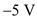
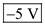
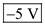

Step 1:
Draw the open circuited ideal diode and indicate the terminals.
Figure 1
An ideal diode in the forward direction conducts current forced by the external circuit while displaying a zero voltage drop across the diode and it does not conduct any current in the reverse direction and any applied voltage appears as reverse bias across the diode.
Step 2:
(a)
For the ideal diode as shown in Figure P4.2 (a) in the text book, the cathode is connected to source and the anode is connected to  source.
source.
Therefore, the diode is in forward bias and the voltage drop across the diode is 0 V.
Draw the equivalent circuit.
Figure 2
Step 3:
From the circuit in Figure 2, the output voltage,  is,
is,
Use Ohm’s law to find the current in the circuit.

Thus, the voltage, is
is and the current,
and the current,  is
is .
.
Step 4:
(b)
For the ideal diode as shown in Figure P4.2 (b) in the text book, the cathode is connected to  source and the anode is connected to
source and the anode is connected to  source.
source.
Therefore, the diode is in reverse bias and the current passing through the diode is .
.
Draw the equivalent circuit.
Figure 3
Step 5:
From the circuit in Figure 2, the current,  is,
is,

Use Ohm’s law to find the output voltage.
Thus, the voltage,  and the current,
and the current,  in the circuit of Figure 4.2 (b) as shown in the text book are
in the circuit of Figure 4.2 (b) as shown in the text book are  and
and  respectively.
respectively.
Step 6:
(c)
For the ideal diode as shown in Figure P4.2(c) in the text book, the cathode is connected to  source and the anode is connected to source.
source and the anode is connected to source.
Therefore, the diode is in forward bias and the voltage drop across the diode is 0 V.
Draw the equivalent circuit.
Figure 4
Step 7:
From the circuit in Figure 4, the output voltage,  is,
is,
Use Ohm’s law to find the current in the circuit.
Thus, the voltage, is
is and the current,
and the current,  is
is .
.
Step 8:
(d)
For the ideal diode as shown in Figure P4.2 (d) in the text book, the cathode is connected to  source and the anode is connected to
source and the anode is connected to  source.
source.
Therefore, the diode is in reverse bias and the current passing through the diode is .
.
Draw the equivalent circuit.

Figure 5
Step 9:
From the circuit in Figure 5, the current,  is,
is,
Use Ohm’s law to find the output voltage.
Thus, the voltage,  and the current,
and the current,  in the circuit of Figure 4.2 (d) as shown in the text book are  and respectively.
in the circuit of Figure 4.2 (d) as shown in the text book are  and respectively.